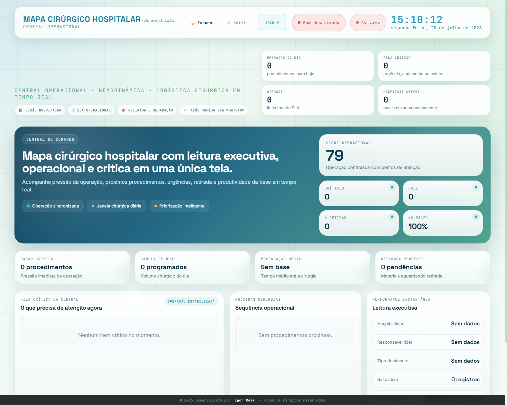

Sou Igor Reis, de Campo Grande/MS. Depois de 15+ anos em logística hospitalar e varejo — validando ERPs, testando fluxos e garantindo conformidade ANVISA todos os dias — estou em transição para atuar formalmente como Analista de QA. Faço UAT no dia a dia e construí meu próprio projeto de software para aplicar essa mentalidade na prática.
Estou em transição de carreira para atuar como Analista de QA. Ainda não tenho experiência profissional formal na área, mas venho me dedicando de forma consistente a essa mudança: estudo na QA Academy da Qazando, curso Análise e Desenvolvimento de Sistemas, e pratico o que aprendo em projetos reais.
Antes disso, construí mais de 15 anos de trajetória em logística: 7 anos em varejo e 8 anos em logística hospitalar, com compras, gestão de estoques e materiais consignados, sempre em ambientes com exigência rígida de conformidade regulatória (ANVISA), rastreabilidade e controle de qualidade.
No dia a dia, sou eu quem realiza os testes de aceitação (UAT): atuo como cliente final dos sistemas que utilizo, validando pessoalmente cada fluxo e funcionalidade antes de aprovar novas versões e ajustes. Faço isso hoje no sistema Callisto — antes, no Albatroz, participando diretamente da migração entre os dois em abril de 2025.
Não venho de um bootcamp sem contexto de negócio. Venho de 15 anos vendo o que acontece quando um sistema falha na prática — ruptura de estoque, material vencido, retrabalho, não conformidade. É essa mentalidade analítica, testada em ambiente real, que quero levar para QA.
Da auditoria contábil à gestão de compras hospitalares — sempre em funções que exigem atenção a detalhes, rastreabilidade e conformidade com regras rígidas.
Em abril de 2025, a empresa migrou do sistema Albatroz para o Callisto. Participei diretamente da validação dessa transição: testando fluxos, comparando comportamento entre as duas versões e aprovando o que estava pronto para uso — uma prática que se conecta diretamente com o trabalho de QA.
Um sistema operacional em tempo real que construí sozinho pra resolver um problema real de logística: acompanhar status, documentos e prazos de procedimentos com múltiplos usuários, sem depender de planilha solta. Hoje é usado diariamente por duas unidades. Não é um projeto de portfólio para "mostrar que sei programar" — é onde eu aplico, na prática, a mesma mentalidade analítica que quero levar para QA: testar fluxos, achar inconsistência, corrigir e confirmar que ficou certo.

Construir o Monitor Cirúrgico me colocou nos dois lados ao mesmo tempo: quem constrói o sistema e quem depende dele todos os dias. Isso me obrigou a testar de verdade — não só "clicar pra ver se abre", mas validar regra de negócio, checar permissão de acesso por papel de usuário e confirmar que um dado sensível está mascarado do jeito certo antes de mostrar pra alguém de fora.
Ao longo do desenvolvimento, encontrei e corrigi bugs reais de autenticação, controle de acesso e importação automática de PDF — o mesmo tipo de trabalho analítico e de validação que faço hoje no UAT da minha rotina profissional, só que aplicado ao próprio código.
A arquitetura (JavaScript, PostgreSQL via Supabase, autenticação e políticas de segurança em nível de linha) é só o meio. O que importa aqui é o processo: entender o fluxo real de uso, testar, quebrar, corrigir e confirmar — em qualquer sistema, de qualquer área.
Estou aberto a conversas, trocas e oportunidades na área de QA e Testes de Software. Se você quer entender melhor minha trajetória ou já tem uma vaga em mente, me chama.
Buscando minha primeira oportunidade formal em Testes de Software / QA. Respondo em até 24h.